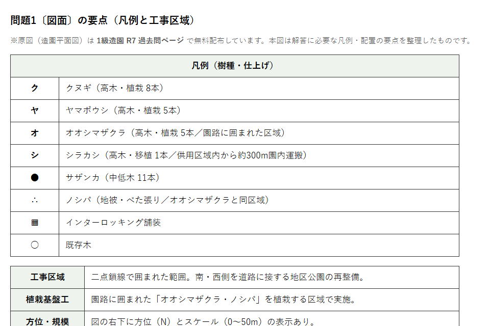
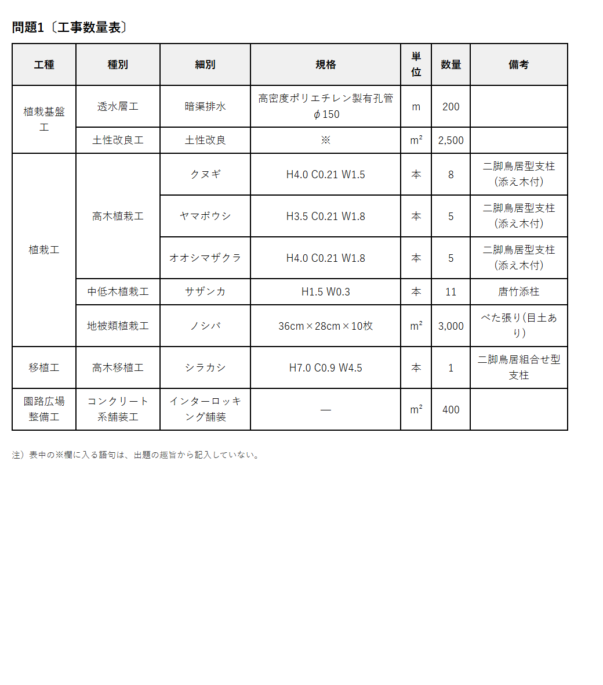
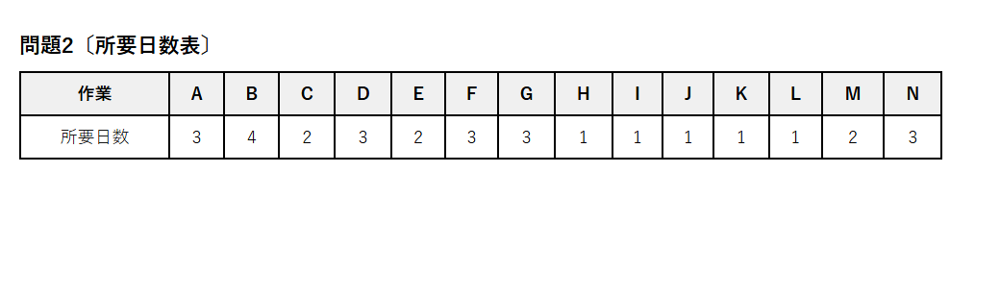
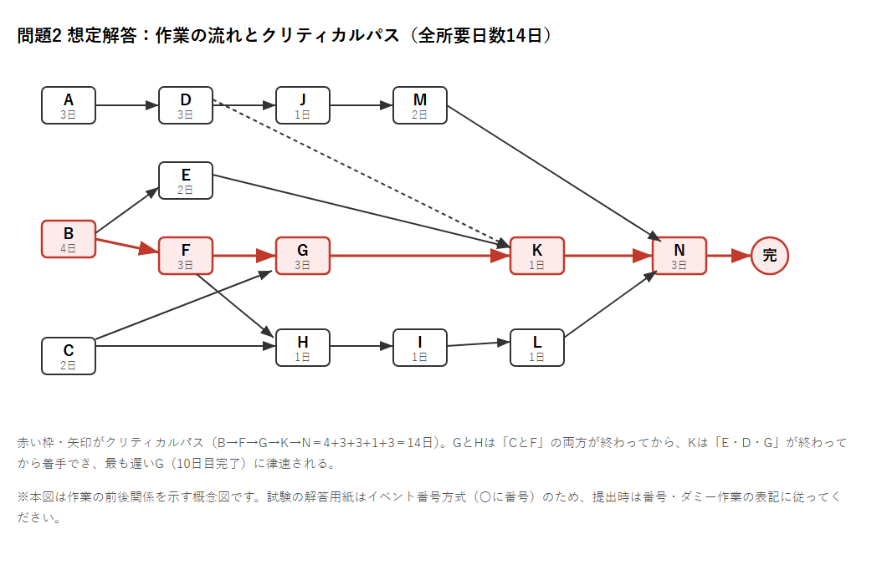
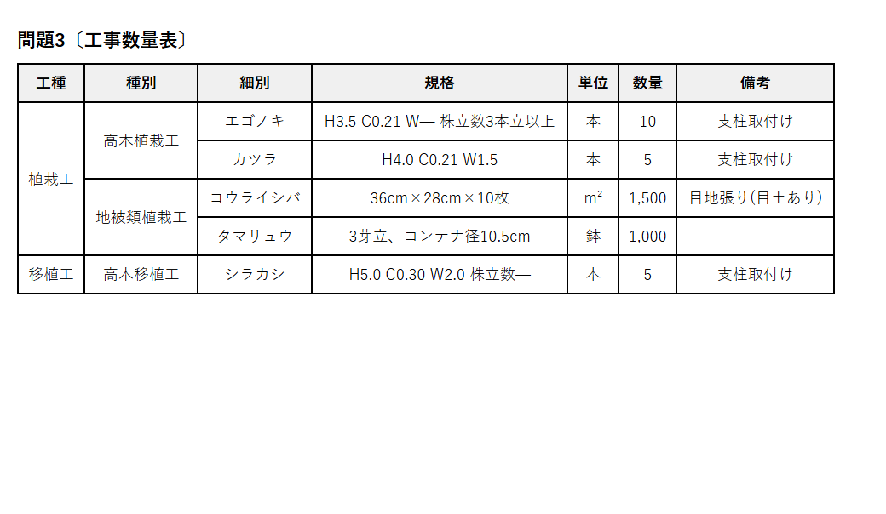
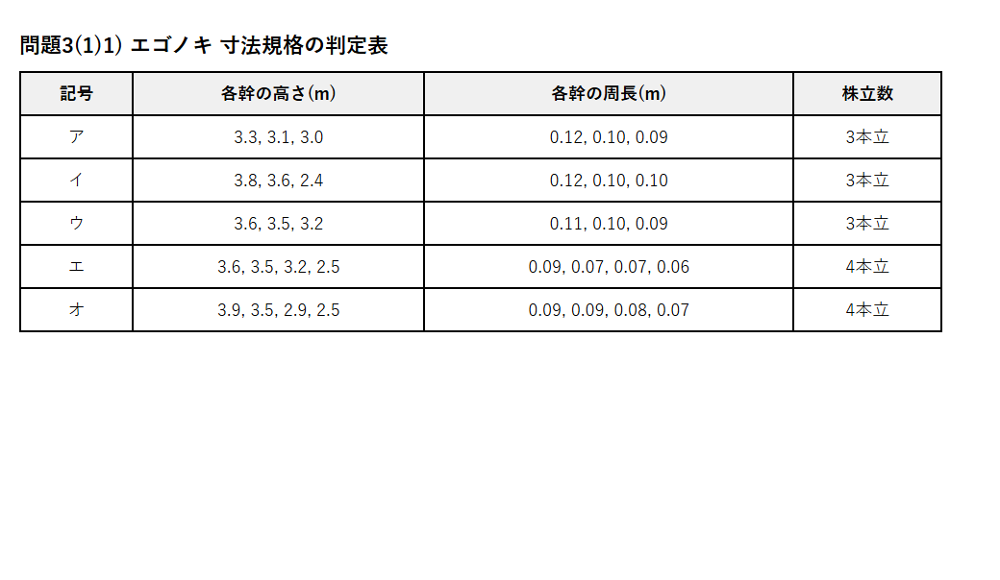
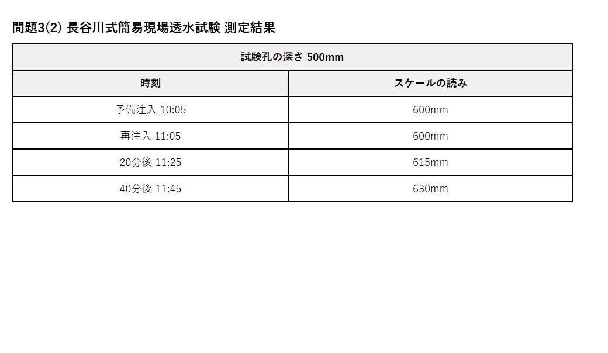
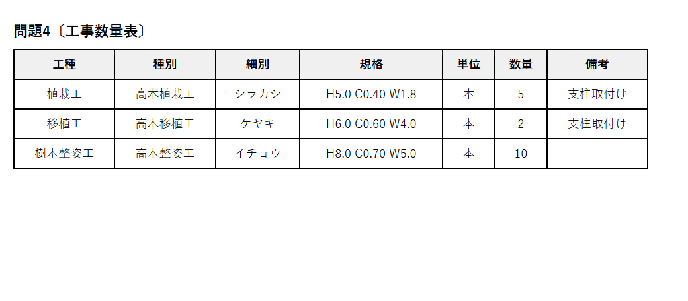

この記事は、令和7年度（2025年度）1級造園施工管理技士 第二次検定 の問題1〜問題4について、独学一発合格者が 問題文（図・表を含む）＋想定解答＋詳しい解説 をまとめたものです。
第二次検定の公式正答は試験機関から非公開です（一次検定の正答のみ公表）。本記事の解答は、「公共用緑化樹木等品質寸法規格基準（案）」「造園施工管理技術編」「クレーン等安全規則」「建設業法」等を根拠に、独学一発合格者が作成した想定解答です。実際の採点では複数の表現が認められる場合があります。
すべて 独学一発合格。ブログ「土木のトリセツ」運営。
R7はすべて必須問題（4問）でした。土木と違い経験記述がないため、対策は技術知識の記述に集中できます。
R7の問題用紙・図面PDFは 1級造園 R7過去問ページ から無料ダウンロードできます（本記事の図面・略図は当サイトで作成・再構成したものです）。
建設工事における一般的な施工管理について、次の記述の（A）〜（C）に当てはまる適当な語句を記述しなさい。
① 発注者が建設工事の仕様を設定する際、建設工事を施工する上で必要な技術的要素や工事内容のうち定型的な内容を盛り込み作成した（A）のみでは、発注者の意図を受注者に十分伝えることができない場合が多いため、発注者は地域性や工事の特殊性に適合した（B）を作成し、工事目的に適合した材料、施工方法、仕上げ等の規定を行う。
>
② 発注者から建設工事を直接請け負った建設業者は、品質・工程・安全などの施工上のトラブルの発生、一括下請けなどの建設業法違反、安易な重層下請による生産効率低下などを防止する観点から、下請負人に関する事項などを記載した（C）を作成し工事現場ごとに備え置かなければならない。
※noteの有料ラインはこの位置に設定してください
次に示す〔図面〕、〔工事数量表〕及び〔工事に係る条件〕に基づく造園工事の施工管理に関して答えなさい。
〔図面〕（供用中の地区公園の再整備。工事区域内にクヌギ・ヤマボウシ・オオシマザクラ・サザンカを植栽、ノシバをべた張り、インターロッキング舗装、シラカシを園内移植）

〔工事数量表〕

〔工事に係る条件〕
オオシマザクラとノシバの植栽予定地において、検土杖による調査の結果、有効土層に粘性土が多く含まれていた。また、土壌pHは平均で4.3であった。この植栽予定地の植栽基盤整備に関して以下の(イ)、(ロ)について答えなさい。
>
(イ) 土壌の透水性を改善するため、暗渠排水による透水層工を施工することになった。暗渠排水のための有孔管敷設のための掘削作業及び有孔管敷設後の埋戻し作業について、それぞれ具体的に作業内容を記述しなさい。
>
(ロ) この植栽予定地で土性改良工を行う際に、透水性の改善を目的とする土壌改良材と土壌pHの中和を目的とする土壌改良材を使用することとした。使用する土壌改良材として最も適当なものを、下記の選択欄からそれぞれ1つ選び、解答欄に記述しなさい。
>
〔選択欄〕真珠岩パーライト／ゼオライト／硫安／ピートモス／炭酸カルシウム／黒曜石パーライト
(イ) 掘削作業： 排水先に向かって所定の下り勾配を確保しながら、有孔管を敷設する深さまで溝状に掘削し、溝底は不陸が生じないよう平滑に仕上げる。
(イ) 埋戻し作業： 溝底に砂・砕石等を敷いて有孔管を所定の勾配で据え付け、管の周囲を砂利・砕石等の透水性の良いフィルター材で包むように埋め戻したうえ、その上に掘削土を埋め戻す。
(ロ)
(イ) シラカシの移植について移動式クレーンを使用することとしている。積込み作業を行う際に、樹幹や枝葉に損傷を与えないようにするため、どのような品質管理上の措置を行うのか、対象部位等を明記して、具体的に3つ記述しなさい。（ただし、クレーンの据付け・操作に関する内容は除く。）
>
(ロ) シラカシの植栽後、マルチングを行うこととした。マルチングの効果を、3つ記述しなさい。
(イ)（3つ）
1. 樹幹：玉掛けワイヤーが直接幹に当たらないよう、幹に幹巻き（こも・わら）や当て物を施し、樹皮の損傷・剥皮を防ぐ。
2. 枝（樹冠）：枝を縄で幹側へ寄せて軽く縛り（枝しおり）、枝折れ・枝擦れを防ぐ。
3. 根鉢：根鉢の肩・側面に当て物を当て、吊り上げ時に根鉢が崩れたり樹皮が傷つかないよう養生する。
(ロ)（3つ）
1. 土壌表面からの水分蒸発を抑制し乾燥を防ぐ。
2. 地温の急変を緩和し根を保護する。
3. 雑草の発生を抑制する。
（ほか：泥はね防止・表土の流失や固結の防止でも可）
(イ) ヤマボウシの植付けにあたり、搬入された樹木の枝葉の剪定を行った。その目的と作業方法を、それぞれ具体的に記述しなさい。
>
(ロ) クヌギの二脚鳥居型支柱に用いる杉丸太について、材料選定に関する留意事項を、具体的に記述しなさい。（ただし、材料の寸法に関する内容は除く。）
>
(ハ) クヌギ、ヤマボウシの植付け後、樹木の動揺を防ぎ活着を助けるために二脚鳥居型支柱を設置した。支柱の設置が樹木の活着を助ける仕組みについて、具体的に記述しなさい。（ただし、倒木の防止に関する内容は除く。）
(イ) 目的： 移植で根が減少し吸水能力が落ちているため、枝葉を減らして蒸散量を抑え、吸水と蒸散のバランスを保って活着を促す。
(イ) 作業方法： 不要枝・徒長枝・からみ枝・ふところ枝を間引き剪定し、樹形を保ちつつ全体の枝葉量を減らす。
(ロ) 防腐処理が施され、割れ・腐れ・著しい曲がりがなく、皮はぎした平滑な直幹材の丸太を選定する。
(ハ) 支柱で樹体を固定することで風等による幹・根鉢の動揺を防ぎ、新たに発生した細根（発生根）が切断されるのを防いで活着を促進する。
(イ) 下記の条件に従い、未完成のネットワーク式工程表を完成させなさい。（作業名は記号で図示すること）
>
［条件］A・B・Cは同時に着手できる／DはAの後続／E・FはBの後続／G・HはC・Fの後続／IはHの後続／KはEの後続であり、D・Gが終わらないと着手できない／LはIの後続／MはJの後続／NはK・L・Mの後続
>
(ロ) (イ)の場合において、工程の各作業の所要日数が下表のとき、クリティカルパスの作業名を、例により記述しなさい。（例：A→B→C）
>
(ハ) (ロ)の場合において、作業Jを最も早く開始することができ、かつ、クリティカルパスにおける全所要日数を延ばすことができないとき、作業Jを延ばすことができる最大日数（トータルフロート）は何日か。
>
(ニ) 施工箇所の条件から所要日数を再検討したところ、作業Aが6日、作業D・E・Kがそれぞれ2日ずつ多くかかることが判明した。この場合のクリティカルパスにおける全所要日数は何日か。
〔所要日数表〕

(イ)・(ロ) 作業の流れとクリティカルパス

各作業の最早終了時刻を計算します（先行作業の最早終了の最大値から各作業を開始）。
(ロ) 全所要日数＝14日、クリティカルパス＝ B→F→G→K→N（4+3+3+1+3＝14）
(ハ) 作業Jのトータルフロート＝2日
Jの経路は J→M→N。Nを遅らせない（Nは11日目開始）ためにはMは9日目までに開始＝Jは9日目までに終了すればよい。Jの最早終了は7日目なので、9−7＝2日延ばせる。
(ニ) 再検討後の全所要日数＝17日
A＝6, D＝5, E＝4, K＝3 に変更して再計算：
クリティカルパスは A→D→K→N と A→D→J→M→N の2本（いずれも17日）。
(2) 工程計画の用語
（式：作業可能日数 ≧ 所要作業日数 ＝ 工事量 ÷ 1日平均施工量）
(3) 施工者自らの管理不良による時間損失の要因（2つ）
1. 材料・建設機械の手配不良や段取り替えの多発
2. 作業員の配置・人員計画の不良による手待ち・手戻り
✅ ネットワークの数値（14日・トータルフロート2日・17日）は本記事で2回検算済みです。なお解答用紙はイベント番号方式のため、(イ)の作図はダミー作業・番号表記に従ってください。
次に示す〔工事数量表〕に基づく造園工事の品質管理に関して答えなさい。
〔工事数量表〕

1) 下表に示すア〜オのエゴノキは、本工事に使用するものの一部である。工事数量表の「H」及び「C」の寸法規格基準を満たしているものの記号を、全て記入しなさい。ただし、表中の「各幹の周長」のそれぞれの数値は、「各幹の高さ」の数値の順序と同じ幹に対するものである。

2) カツラの寸法規格に関し、「C」及び「W」の測定に関する次の記述の（①）〜（③）に当てはまる語句又は数値を記述しなさい。
・「C」は、根鉢の上端より（①）m上りの位置を測定し、この部分に枝が分岐している場合は、分岐部分の（②）を測定する。
・「W」は、四方面に伸長した枝の幅を測定し、測定方向により長短がある場合は、（③）とする。なお、一部の突出した枝は含まない。
1) 規格を満たすもの：ウ
エゴノキの規格は H3.5・C0.21・3本立以上。株立物の判定基準は以下のとおり。
各記号の判定：
| 記号 | 樹高判定 | 幹周＝総和×0.7 | 合否 |
|---|---|---|---|
| ア | 3.5m以上が0本 ✗ | (0.12+0.10+0.09)×0.7＝0.217 ○ | ✗ |
| イ | 3.8・3.6が3.5以上(過半数○)／他2.4<2.45 ✗ | 0.32×0.7＝0.224 ○ | ✗ |
| ウ | 3.6・3.5が3.5以上(過半数○)／他3.2≧2.45 ○ | 0.30×0.7＝0.21 ○ | ○ |
| エ | 4本中3.5以上が2本のみ(過半数=3本必要) ✗ | 0.29×0.7＝0.203<0.21 ✗ | ✗ |
| オ | 4本中3.5以上が2本のみ ✗ | 0.33×0.7＝0.231 ○ | ✗ |
→ 両方満たすのはウのみ。
2)
(イ) 次の記述は、植栽基盤としての土壌に透水性（排水性）が求められる理由を示したものである。空欄に当てはまる適切な語句を記述しなさい。
「多量の雨が降ると土壌は一時的に飽水状態となり…排水が悪い場所では、土壌は酸欠状態になる。（ ）と呼ばれる障害はこのような酸欠状態によって引き起こされる。」
>
(ロ) 長谷川式簡易現場透水試験器で調査を行ったところ、下表の結果を得た。減水速度（最終減水能、mm/時(hr)）を求め、植栽基盤の判定結果について「不良」もしくは「可」のいずれかを記述しなさい。

(イ)（ ）＝ 湿害（過湿害）
(ロ) 減水速度＝45mm/hr
最終の測定区間（11:25→11:45の20分間）で、スケールの読みが615mm→630mm＝15mm低下。
減水速度＝15mm ÷ 20分 × 60分＝45mm/hr
判定：可（⚠️下記参照）
次に示す〔工事数量表〕及び〔工事に係る条件〕に基づく造園工事の安全管理に関して答えなさい。
〔工事数量表〕

〔工事に係る条件〕
(1) 安全管理に関する新規入場者教育について、一般的な教育内容を具体的に2つ記述しなさい。（本工事に係る具体的な作業方法に関する内容を除く。）
>
(2)(イ) 「クレーン等安全規則」に規定する移動式クレーンの安全管理に関する次の記述の（A）〜（D）に当てはまる適当な語句又は数値を記述しなさい。
・事業者は、（A）荷重が1トン以上の移動式クレーンの運転業務については、運転免許を受けた者でなければ就かせてはならないが、（A）荷重が1トン以上（B）トン未満の場合は、小型移動式クレーン運転に関する（C）を修了した者も就かせることができる。
・事業者は、（A）荷重が1トン以上の移動式クレーンの玉掛けの業務は、玉掛けに関する（C）を修了した者でなければ就かせてはならない。
・事業者は、直径の減少が公称径の（D）パーセントをこえるワイヤロープを玉掛用具として使用してはならない。
(2)(ロ) 移動式クレーンの玉掛け作業において、玉掛け者が安全確保のために行う事項を、具体的に1つ記述しなさい。（作業前の打合せ、点検及び配置・据付けに関する事項を除く。）
>
(3)(イ) 高所作業車の作業床で剪定作業を行う作業員が、自らの安全を確保するために留意すべき事項を、具体的に2つ記述しなさい。（墜落制止用器具及び合図者に関する内容は除く。）
(3)(ロ) 高さ3m以上の高所から剪定枝を投下するときに通行人の危険を防止するために講じるべき措置について、具体的に2つ記述しなさい。
(1) 新規入場者教育（2つ）
1. 現場の作業内容・作業手順、現場のルールや危険箇所の周知
2. 安全衛生に関する事項（保護具の正しい着用、緊急時の連絡・避難方法）
(2)(イ) クレーン等安全規則の穴埋め
(2)(ロ) つり荷の重心を確認し、フックを重心の真上に誘導してから玉掛けする（つり荷が水平・安定するよう掛け、地切り後に一旦停止して安定を確認する）。
(3)(イ)（2つ） 作業床から身を乗り出さない／作業床の最大積載荷重を超える人・物を載せない。
(3)(ロ)（2つ） 投下設備（ダストシュート等）を設ける／監視人を置き、立入禁止区域を設定する。
⚠️ (2)の数値・用語は法令の条文に基づく想定です。1トン／5トンの区分、7%は頻出の確実な数値ですが、念のためクレーン等安全規則の原文でご確認ください。
1. 経験記述がない＝技術知識の正確な記述が全て。用語・数値の暗記が直結。
2. 植栽基盤・移植・支柱・品質規格が頻出の4本柱。
3. ネットワーク工程表は毎年出る計算問題。解き方を固めれば確実な得点源。
4. 安全管理はクレーン等安全規則・労働安全衛生規則の数値がそのまま問われる。
1. 過去問を年度ごとに解く（1級造園 過去問ページ）
2. 「公共用緑化樹木等品質寸法規格基準（案）」の数値を暗記（幹周1.2m・株立の総和70%・過半数ルール）
3. ネットワーク工程表の計算を反復
4. 本記事の採点ポイントで「減点されない書き方」を確認
ご質問やお気づきの点があればコメントでお知らせください。あなたの合格を応援しています！
ビーバー監督（土木のトリセツ）
1級造園・1級土木・2級造園施工管理技士をすべて独学一発合格。